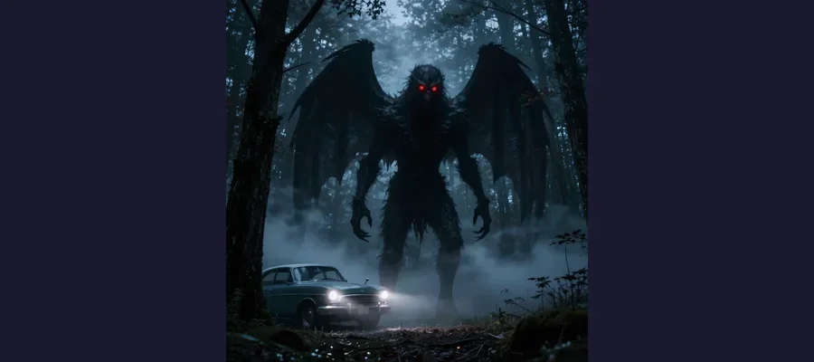
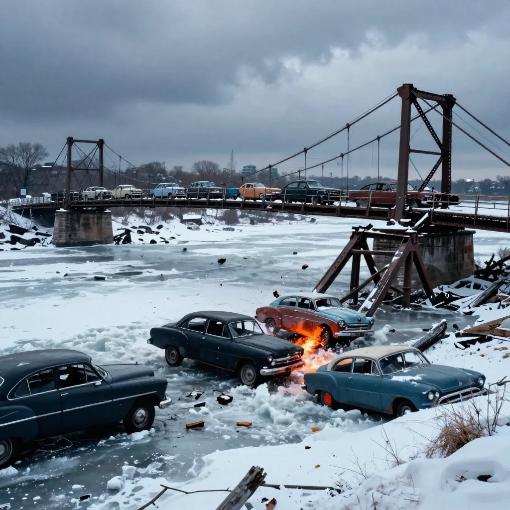

Mothman: The Winged Creature That Terrorized a West Virginia Town for 13 Months

The Mothman, a terrifying winged creature with glowing red eyes, was spotted over 100 times in Point Pleasant, West Virginia between November 1966 and December 1967.
On the evening of November 15, 1966, two young couples were driving through the abandoned TNT plant area outside Point Pleasant, West Virginia, a small town perched on the banks of the Ohio River. Roger and Linda Scarberry and Steve and Mary Mallette were not looking for monsters. They were simply cruising, as young people in rural America did on a Tuesday night, when they noticed something standing in the shadows near the old munitions igloos. It was seven feet tall. It had wings folded against its back. And its eyes — large, hypnotic, and glowing an impossible red — stared directly at them.
The creature pursued their car as they fled, keeping pace at speeds exceeding 100 miles per hour. It did not run. It glided. When they reached the Point Pleasant city limits, it simply turned and vanished into the darkness. The four shaken witnesses reported the encounter to the local sheriff, and by the next morning, the story was on the front page of the Point Pleasant Register under the headline: "Couples See Man-Sized Bird... Creature... Something." Over the next thirteen months, more than one hundred people in the Point Pleasant area would report seeing the same impossible being. And then, on December 15, 1967, the Silver Bridge collapsed into the Ohio River, killing forty-six people. The sightings stopped. Whatever the Mothman was — or whatever the people of Point Pleasant believed it to be — it had left behind one of the strangest chapters in the history of American folklore.
The Night It Began: Thirteen Months of Terror
The first Mothman sighting was not, technically, the first. On November 12, 1966, three days before the Scarberry-Mallette encounter, a group of gravediggers in Clendenin, West Virginia, about sixty miles from Point Pleasant, reported seeing a massive figure fly over their heads while they worked in a cemetery. They described it as a "brown human being" moving from tree to tree. This report received little attention. The November 15 sighting, however, detonated like a bomb.
Roger Scarberry, Linda Scarberry, Steve Mallette, and Mary Mallette told Deputy Sheriff Millard Halstead that the creature had grayish-brown skin, stood between six and seven feet tall, and possessed a wingspan estimated at ten feet. Its most disturbing feature was its eyes — large, round, and emitting a hypnotic red glow that witnesses described as intensely unsettling, almost as if the creature were looking through them rather than at them. The being pursued their vehicle for the entire length of Route 62 before breaking off the chase.
Over the following weeks, sightings multiplied. On November 16, 1966, just one day after the first report, a woman named Marcella Bennett was visiting friends near the TNT plant when she saw a large, gray creature rise from the ground and glide toward her. She was so terrified she dropped her infant daughter. On November 25, a young boy reported seeing a creature with glowing red eyes outside his home. On November 27, a woman driving near the TNT plant said a winged creature followed her car for miles. By the end of November, the national media had descended on Point Pleasant, and "Mothman" — a name apparently coined by a newspaper copy editor — had entered the American lexicon.
- November 12, 1966 — Gravediggers in Clendenin, WV, see a large winged figure over a cemetery
- November 15, 1966 — Two couples see a 7-foot creature with glowing red eyes near the TNT plant; creature chases their car
- November 16, 1966 — Marcella Bennett encounters Mothman while visiting friends near TNT plant
- November 25, 1966 — A young boy reports glowing red eyes outside his home in Point Pleasant
- November 27, 1966 — A woman driving near TNT plant reports being followed by a winged creature
- 1966-1967 — Over 100 reported sightings in the Point Pleasant area
- December 15, 1967 — Silver Bridge collapses; 46 people killed; Mothman sightings cease
💣 The TNT Plant: A Monster's Lair
The West Virginia Ordnance Works, known locally as the "TNT plant," was a World War II munitions manufacturing facility covering over 8,000 acres near Point Pleasant. During the war, it produced trinitrotoluene (TNT) for the military. After the war, the plant was decommissioned and largely abandoned, leaving behind a sprawling complex of concrete igloos — earth-covered bunkers once used to store explosives — surrounded by dense forest, marshland, and contaminated groundwater. The site was dark, isolated, and deeply unsettling even before anyone reported seeing a monster there. For paranormal investigators, it was the perfect habitat for an unknown creature: remote, largely unexplored, and saturated with industrial contamination that might have driven unusual mutations or attracted unusual wildlife. The TNT plant became ground zero for the Mothman legend, and most of the earliest sightings occurred within or near its perimeter.

An artistic depiction of the Mothman — described by witnesses as a 7-foot tall winged creature with glowing red eyes, spotted over 100 times in Point Pleasant, West Virginia between 1966 and 1967.
Beyond the Beast: UFOs, Men in Black, and Indrid Cold
The Mothman sightings did not occur in isolation. During the same thirteen-month period, Point Pleasant and the surrounding region experienced a wave of anomalous phenomena that included UFO sightings, encounters with mysterious government agents, strange phone calls, electrical disturbances, and reports of a bizarre entity known as Indrid Cold, the "Grinning Man." The pattern — cryptid sightings accompanied by UFO activity and Men in Black visitations — was not unique to Point Pleasant, but it was unusually concentrated and well-documented.
On November 2, 1966, two weeks before the first major Mothman sighting, a appliance salesman named Woody Derenberger was driving on Interstate 77 near Parkersburg, West Virginia, when a strange vehicle pulled alongside his car. The vehicle was described as dark and unusual in design. Its driver stepped out — a tall man with a dark complexion and a wide, fixed grin. The man introduced himself as Indrid Cold and communicated with Derenberger telepathically, warning him of an impending disaster. Derenberger reported the encounter to the police and was subsequently interviewed by journalist and paranormal investigator John A. Keel.
Keel, a New York-based writer who had been investigating UFO sightings and paranormal phenomena since the early 1960s, became the primary chronicler of the Point Pleasant events. He visited the town repeatedly between 1966 and 1967, conducting over 100 interviews with witnesses. Keel documented not only the Mothman sightings but an entire ecosystem of weirdness: lights in the sky, phone calls from unknown numbers that emitted strange electronic sounds, visitors claiming to be government agents who warned witnesses to stop talking, and an oppressive atmosphere of dread that settled over the town like fog. His 1975 book, The Mothman Prophecies, argued that the events in Point Pleasant were not random but part of a larger pattern of paranormal activity — a "window area" where the barrier between dimensions had grown thin.
The Men in Black Visit Point Pleasant
Several witnesses in Point Pleasant reported being visited by individuals who identified themselves as government agents but who behaved in ways that were, to put it mildly, unusual. These visitors — described as having olive complexions, wearing ill-fitting suits, and speaking in stilted, robotic language — warned witnesses not to discuss their Mothman sightings. Some witnesses said the visitors seemed to know details of their encounters that they had not shared with anyone. These "Men in Black" visitations paralleled similar reports from the Roswell UFO incident and other UFO encounters of the 1940s through 1960s, leading Keel to argue that the Mothman, the UFOs, and the Men in Black were all manifestations of the same phenomenon.
📖 John Keel and the Ultraterrestrial Hypothesis
John Alva Keel (1930–2009) was one of the most influential paranormal investigators of the twentieth century. Unlike many of his contemporaries, who believed UFOs were extraterrestrial spacecraft, Keel developed the "ultraterrestrial hypothesis" — the idea that the entities responsible for UFO sightings, cryptid encounters, and paranormal phenomena were not visitors from other planets but beings from other dimensions who had always coexisted with humanity. Keel argued that these entities appeared in different forms at different times — as fairies in medieval Europe, as airships in the 1890s, as flying saucers in the 1940s, and as Mothman in the 1960s — adapting their appearance to the cultural expectations of each era. Whether or not one accepts Keel's theories, his documentation of the Point Pleasant events remains the most thorough and detailed record of the Mothman phenomenon.

The Silver Bridge collapse on December 15, 1967, killed 46 people. After the disaster, Mothman sightings in Point Pleasant stopped — leading many to believe the creature was an omen of catastrophe.
The Silver Bridge Disaster: When the Prophecies Came True
On December 15, 1967, at approximately 5:00 p.m., during the evening rush hour, the Silver Bridge — which carried U.S. Route 35 over the Ohio River between Point Pleasant, West Virginia, and Kanauga, Ohio — collapsed without warning. The bridge was packed with vehicles. In seconds, the entire structure plunged into the freezing river. Forty-six people died. Nine were injured. Thirty-one of the thirty-seven vehicles on the bridge fell with it — twenty-four into the water, seven onto the Ohio shore. Many of the victims were never recovered.
The official investigation, conducted by the National Transportation Safety Board (NTSB), determined that the collapse was caused by a cleavage fracture in the lower limb of the eye of eyebar 330 — a single component in the bridge's eyebar-chain suspension system. The Silver Bridge, built in 1928, used a design in which the suspension chains were composed of linked metal bars with circular "eyes" at each end, connected by pins. The design was strong but had no redundancy: if a single eyebar failed, the entire chain would separate. The NTSB found that the fracture in eyebar 330 was caused by stress corrosion cracking and corrosion fatigue — the slow, invisible growth of a crack under repeated stress over decades. The failure was invisible, undetectable with 1928 inspection technology, and catastrophic when it occurred.
The Mothman sightings stopped after the bridge collapse. For those who believed the creature was a harbinger of disaster — a death omen — the timing was conclusive. Keel himself had documented witness reports that the creature seemed to appear near the bridge in the weeks before the collapse, as if patrolling. Skeptics pointed out the logical fallacy: people had been seeing the Mothman for thirteen months in a small town where nearly every landmark was within walking distance of the bridge. Any pattern could be imposed retroactively. But the connection between the Mothman and the Silver Bridge had already become folklore, inseparable from the legend.
- Sandhill crane — The most common skeptical explanation; sandhill cranes stand up to 4 feet tall with 7-foot wingspans and red facial markings that could appear to "glow" at night
- Barred owl or great horned owl — Large owls with reflective eyeshine could account for "glowing red eyes" perched in trees
- Misidentified heron — Herons are large birds with distinctive silhouettes that could appear humanoid in poor lighting
- Mass hysteria — The initial reports triggered a wave of suggestion in a small, isolated community during a tense period of the Cold War
- Escaped exotic pet — Some suggested a large bird escaped from captivity, though no such escape was documented
- Prank or hoax — Some witnesses may have fabricated or exaggerated sightings for attention after the media frenzy began
🌟 Harbingers Across Cultures
The idea that a strange creature appears before a disaster is not unique to Point Pleasant. In Japanese folklore, the mujina — a shape-shifting creature — was said to appear before earthquakes. In Irish mythology, the bean-sidhe (banshee) wails before a death in the family. The Flatwoods Monster of West Virginia (1952) and the Owlman of Cornwall, England (1976) share striking similarities with the Mothman: humanoid forms, glowing eyes, and appearances near small communities. Whether these parallels reflect a genuine cross-cultural phenomenon or simply the universal human tendency to associate the unknown with the ominous remains a matter of interpretation.
👻 The Monster That Became a Monument
The Mothman is no longer a mystery. It is an industry. Point Pleasant, West Virginia — population roughly 4,000 — has built an entire tourism economy around a creature that may or may not have existed. The Mothman Museum draws thousands of visitors each year. A twelve-foot stainless steel statue of the creature stands in the town square. The annual Mothman Festival every September brings 10,000 visitors to a town that otherwise has no particular reason to attract tourists. The 2002 film The Mothman Prophecies, starring Richard Gere, introduced the legend to a global audience. But behind the merchandise and the movies lies a real tragedy: forty-six people died when the Silver Bridge collapsed, and their deaths have been overshadowed by the mythology of a monster. The Mothman story, like the enduring mystery of the Loch Ness Monster or the coded messages of the Zodiac Killer, persists because it sits at the intersection of fear and wonder — a place where the rational mind cannot quite dismiss what the witnesses saw, but cannot quite accept what they claim. The Voynich Manuscript may never be decoded. The Black Dahlia murder may never be solved. And the Mothman may never be explained. But the people of Point Pleasant, who lived through thirteen months of genuine terror followed by a genuine catastrophe, deserve to be remembered as more than characters in a ghost story. Their fear was real. Their loss was real. And whatever flew through the West Virginia night in 1966 — crane, owl, or something else entirely — the shadow it cast over that small river town has never fully lifted.
Frequently Asked Questions
What did the Mothman look like?
According to witnesses, the Mothman was a humanoid creature standing approximately six to seven feet tall with a wingspan of about ten feet. Its body was described as gray or grayish-brown, and its most distinctive feature was a pair of large, round, glowing red eyes positioned in what would be the chest or shoulder area (witnesses disagreed on this detail). Some witnesses described the creature as having no visible head, with the eyes set into its torso. It was reportedly capable of flight at speeds estimated at up to 100 miles per hour.
Was the Mothman connected to the Silver Bridge collapse?
There is no established causal connection between the Mothman sightings and the Silver Bridge collapse on December 15, 1967. The NTSB investigation determined that the bridge collapsed due to a structural failure — a fracture in eyebar 330 caused by stress corrosion cracking — not sabotage or any anomalous event. The connection between the two events is circumstantial: Mothman sightings occurred in Point Pleasant for thirteen months and stopped after the bridge collapsed. Author John Keel argued the creature was a harbinger, but this remains a matter of belief, not evidence.
What is the most likely explanation for the Mothman?
The most widely accepted skeptical explanation is that witnesses saw sandhill cranes — large birds that stand up to four feet tall with seven-foot wingspans and distinctive red facial markings. Other possibilities include owls (whose reflective eyeshine can appear to glow red in headlights), herons, or a combination of misidentification and mass suggestion. The concentrated media coverage and the area's isolation likely amplified the effect, causing witnesses to interpret ambiguous stimuli in light of the growing legend.
Can the Mothman still be seen today?
After the Silver Bridge collapse in December 1967, Mothman sightings in Point Pleasant effectively ceased. Occasional reports have surfaced from other locations in the United States and around the world, but none have matched the intensity or frequency of the 1966-1967 wave. Point Pleasant has embraced its cryptid heritage with the Mothman Museum, the Mothman Statue, and the annual Mothman Festival held each September, making the town a destination for paranormal enthusiasts and folklore lovers.
📖 Recommended Reading
Want to learn more? Check out Amazon.com: The Mothman Prophecies (Audible Audio Edition): John A. Keel, Craig Wasson, Random House Audio: Books on Amazon for a deeper dive into this fascinating topic. (As an Amazon Associate, we earn from qualifying purchases.)
References & Further Reading
- Wikipedia: Mothman — History, analysis, and cultural impact of the Point Pleasant sightings
- Wikipedia: Silver Bridge — Construction, collapse, wreckage analysis, and legacy
- National Transportation Safety Board: Collapse of U.S. 35 Highway Bridge — Official NTSB investigation of the Silver Bridge disaster
- Britannica: Mothman — Overview of the West Virginia cryptid legend and its cultural significance
- All That's Interesting: Mothman of West Virginia — Detailed chronology of sightings and the Silver Bridge disaster
- Wikipedia: John Keel — Biography of the paranormal investigator who chronicled the Point Pleasant events
- Wikipedia: Flatwoods Monster — Another West Virginia cryptid encounter with parallels to the Mothman
Editorial note: reconstructions are continuously revised as imaging and inscription studies improve. See our Editorial Policy.